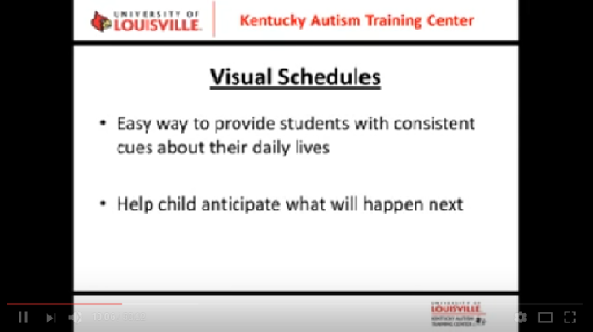
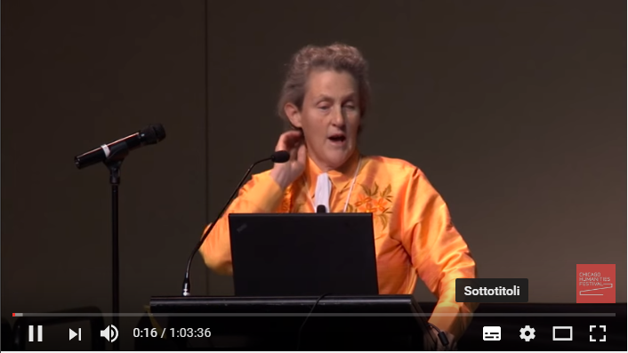

Il metodo TEACCH
Come funziona il metodo
Un interessante video che mostra il metodo strutturato TEACCH messo in pratica dalla madre di un bambino con autismo. La madre ha girato dei video in cui riprende la sorella che mostra, con grande efficacia tra l'altro, in cosa consista il lavoro.
La sorella mostra una sequenza: prima fai i compiti, poi si gioca
La mappa
Utilizzare le immagini è una delle strategie per migliorare la comunicazione con gli alunni con autismo. Per indicare le operazioni da svolgere e orientare meglio il bambino è stata realizzata una mappa posta davanti alla scrivania. Una lista fatta di un triangolo, un rettangolo, un cerchio, ecc. indica la sequenza degli esercizi da svolgere. Su ogni esercizio (un foglio con delle attività da realizzare, in questo caso) c'è la figura geometrica corrispondente. In questo modo il bambino segue l'ordine richiesto senza la necessità di troppe richieste verbali.
La mappa con la sequenza degli esercizi identificati con una figura geometrica.
Alla fine c'è l'immagine del gioco utilizzato come rinforzo.
Disposizione da sinistra a destra
Il materiale da utilizzare viene disposto a sinistra, al centro viene eseguito l'esercizio e quando è stato completato, il materiale viene posto a destra. È questa la struttura che consente di far comprendere al bambino la modalità esecutiva che deve seguire. La disposizione quindi prevede un senso delle operazioni da compiere che va da sinistra a destra. Vi sono più esercizi da compiere e quindi sono identificati da una figura geometrica posta sulla scheda da compilare. La sequenza delle figure geometriche indicata nella mappa di cui si diceva prima, rende chiaro al bambino quali esercizi fare, senza bisogno di indicazioni verbali. Le parole, infatti, possono confondere i bambini con autismo. Per questo bisogna usare poche parole, con messaggi chiari e privi di modi di dire o metafore che non sarebbero comprese.
Il bambino sa cosa fare,
una volta che ha compreso come utilizzare le indicazioni visive
(notate il simbolo del quadrato in alto a destra nel foglio)
Efficacia del metodo
Bisogna premettere che ogni metodo deve essere adattato alle caratteristiche uniche del bambino con cui si ha a che fare. Indipendentemente dal tipo di bambino, però, è chiaro a tutti che riuscire a comprendere cosa si debba fare è essenziale. Occorre che l'ambiente in cui si trova parli da solo, che sia intuitivo ciò che debba esser fatto in un determinato contesto e per far questo occorre tener conto delle strategie di cui si è appena accennato. Dopo l'iniziale contrarietà del bambino ad eseguire i compiti, noterete un drastico cambiamento nel suo atteggiamento, segno della fine della frustrazione iniziale dovuta all'incapacità di comprendere le richieste che gli venivano rivolte.
Il cambiamento nell'umore del bambino è evidente.
Il video
Il supporto delle immagini
Video che spiega perché è importante il supporto delle immagini per gli alunni con disturbi dello spettro autistico
La mente autistica
La nota scienziata Temple Grandin, esperta del comportamento degli animali, sulla cui vita è stato girato un film, è tra le persone più famose con sindrome autistica. La sua condizione le ha conferito delle abilità uniche. Recentemente si è interessata di effettuare ricerche proprio sull'autismo. Il suo libro più recente, "The Autistic Brain", presenta le ultime ricerche sull'argomento.
Problemi di comportamento
Video con un'intervista a Linda Hodgdon, specializzata nelle patologie della comunicazione verbale, conosciuta a livello internazionale per le sue competenze nello sviluppo di strategie per bambini con disturbi dello spettro autistico o altri problemi di comunicazione o di comportamento.